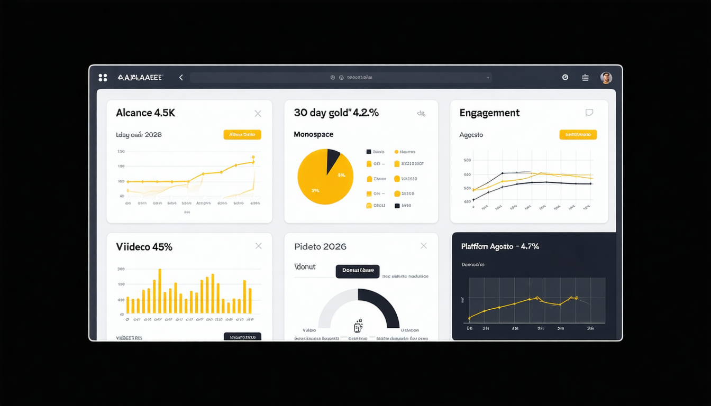

Objetivo: Crear un sistema de medición completo con dashboard, informe ejecutivo de ROI, y plan de optimización basado en datos — sintetizando TODOS los aprendizajes del curso.
Nivel Bloom: Crear / Sintetizar
• "¡Tenemos 50,000 seguidores!"
• Likes totales
• Impresiones brutas
• Visitas al perfil
• Views del video
Se ven impresionantes pero no indican impacto real.
• Tasa de crecimiento (%/mes)
• Engagement Rate
• Reach único / Alcance
• Conversion rate a seguidor
• Completion Rate de video
Te dicen qué hacer diferente para mejorar.
💭 50K seguidores con 0.3% ER = 150 personas que interactúan. 5K con 8% ER = 400 personas activas. ¿Cuál prefieres?
1. Reach (personas únicas)
2. Impresiones (veces mostrado)
3. Engagement Rate
4. Save Rate
5. Share Rate
6. CTR (Click-Through Rate)
7. Tasa de mensajes recibidos
8. Costo por resultado
9. Tasa de crecimiento seguidores
10. Tasa + tiempo de respuesta
Cada métrica responde una pregunta: Alcance → ¿Me ven? | ER → ¿Les importo? | Saves → ¿Soy útil? | Shares → ¿Soy compartible? | CTR → ¿Actúan?
Un post tiene: 5,000 alcance | 120 likes | 18 comentarios | 35 saves | 12 shares
ER = (120+18+35+12) / 5,000 × 100 = 3.7% → Por encima del benchmark de alimentos (2.4%) ✅
| Industria | ER Instagram | Save Rate | Crecimiento/mes |
|---|---|---|---|
| Educación | 3.2% | 2.5% | +2.8% |
| Alimentos y bebidas | 2.4% | 1.8% | +1.5% |
| Moda | 1.8% | 3.1% | +1.2% |
| Tech/SaaS | 1.3% | 1.4% | +1.0% |
| Turismo/Viajes | 2.1% | 2.8% | +1.8% |
| Retail/E-commerce | 1.5% | 2.0% | +1.3% |
💭 ¿En qué industria está tu marca? Compara tus datos con el benchmark. ¿Estás arriba o abajo?
📊 Dashboard mensual — Agosto 2026 | Marca: [Tu marca local]

Inversión: Salario ($15K) + Herramientas ($500) + Pauta ($5K) = $20,500
Ingresos por redes: 45 ventas × $800 = $36,000
💭 ¿Puedes calcular el ROI de tu marca? Si no vende directamente, ¿cuál es el valor indirecto?
| Variable | Versión A | Versión B | Métrica |
|---|---|---|---|
| Hook | "¿Sabías que...?" | "STOP. Lee esto" | Saves + comentarios |
| Formato | Carrusel | Reel (mismo tema) | Alcance + shares |
| Hora | 12:30 PM | 7:30 PM | Alcance primeras 24h |
| CTA | "Guárdalo 🔖" | "Comparte con un amigo" | Saves vs. Shares |
1️⃣ Hipótesis → 2️⃣ Cambia UNA variable → 3️⃣ Define métrica ANTES → 4️⃣ Espera 48-72h → 5️⃣ Analiza: si diferencia > 25% = hallazgo fuerte
Lección: No gastaron más — usaron MEJOR los datos que ya tenían.
⚠️ No basta reportar números. Debes EXPLICAR por qué ocurrieron y qué significan para la marca.
| Área | Pregunta guía | Decisión ejemplo |
|---|---|---|
| Contenido | ¿Qué formato potenciar? | +50% Reels, -30% posts estáticos |
| Horarios | ¿Cuándo publicar? | Martes y jueves 7-8pm (dato de Insights) |
| Pauta | ¿Dónde reasignar $? | Mover $500 de Facebook a TikTok |
| Influencers | ¿Qué colaboración repetir? | Nano-influencers con Stories >90% completion |
| Comunidad | ¿Qué dinámica escalar? | Quiz semanal en Stories (8% ER) |
| Tests propuestos | ¿Qué testear el próximo mes? | Carrusel narrado vs. Reel tutorial |
💭 Cada decisión de tu plan debe estar respaldada por UN DATO de tu dashboard. Sin dato = opinión. Con dato = estrategia.
10+ KPIs
Datos simulados realistas
Métricas por plataforma
Top 5 posts del mes
Rendimiento por formato
Herramientas: Looker Studio, Sheets, Canva
Máximo 3 páginas
5 hallazgos principales
Análisis de rendimiento
Cálculo de ROI
Lecciones aprendidas
Formato: PDF o Google Docs
Decisiones por área
3+ A/B tests propuestos
Presupuesto recomendado
Proyección de resultados
Timeline de implementación
Formato: Tabla + narrativa
Este es tu portafolio profesional. Un empleador que vea este entregable sabe que puedes gestionar redes con criterio estratégico.